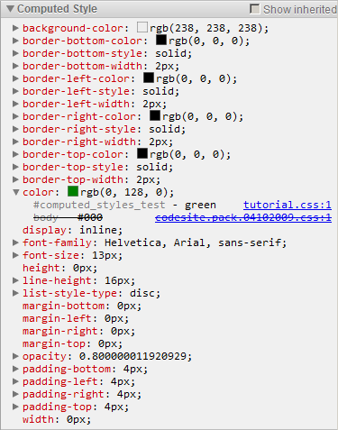

Computed Style Pane

The DevTools docs have moved! Read the latest version of this article and head over to the new home of Chrome DevTools for the latest tutorials, docs and updates.
This tutorial covers editing CSS styles using various DevTools aids.
Note: If you are a Web Developer and want to get the latest version of Developer Tools, you should use the Google Chrome release from the Developer Channel.
Note: A style declaration may contain several properties with the same name. Only the last one takes effect, canceling the preceding ones. Those will be struck out, like overridden properties.
background-image) contains a URL
that has been loaded, you can click it to navigate to the corresponding
resource in the Resources panel.::before,
::after, and many more -webkit-* ones, are also
exposed in the Styles pane, along with the rules inherited from ancestor
elements.
worder property name, and type in
bo instead. A valid border property name will be
automatically suggested.
border-color
suggestion, and press Enter or Tab to accept it and jump to the
value field (alternatively, you can press Right to accept the
suggestion and continue editing the field,) or Esc to cancel
the change. As usual, Shift-Tab traverses input fields in the reverse
order.border-color property value, delete
the clue word, and type in bl – in a moment, you
will see a suggestion: black.
bl. Choose any color value you like, and press Enter
or Tab to accept the suggestion and commit the new property value. The
property gets committed, and the exclamation mark disappears, as the property
has become valid.
opacity: 0.8
or margin: 2px 4px) with the Up/Down and
PageUp/PageDown keys. The unit delta can be controlled in the
following ways:
[-1; 1])1
or less than -1)border-color property
(i.e. temporarily remove it from the style). The property gets struck out, and
the change is instantly reflected in the inspected page.
border-color property value and
change it to Lime, accept. Notice the property automatically get
enabled with the updated value.
Note: If you edit the selector so that it will not match the selected element, the rule will turn dimmed and obviously, will not be applied to the element. You should rarely need to do this.

position: fixed and position: absolute
elements, the central field contains the actual